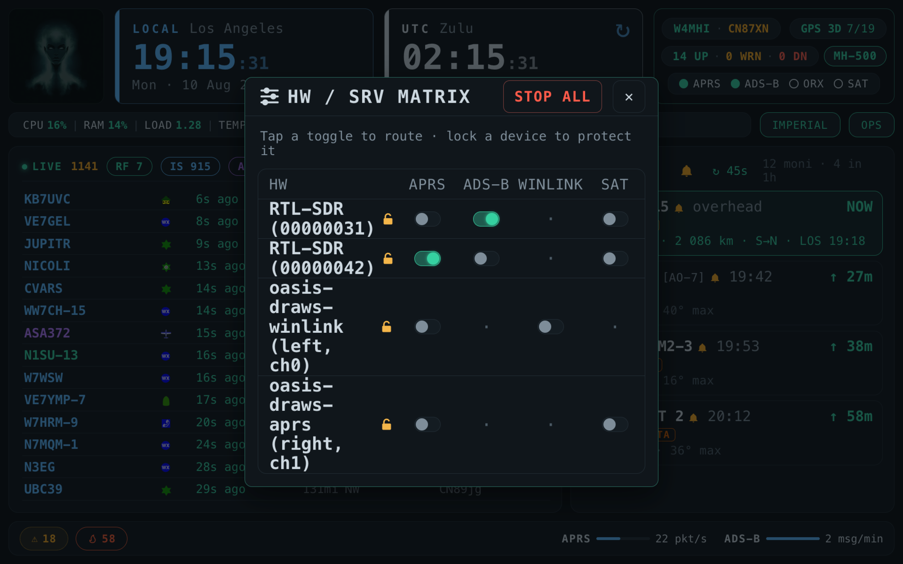

Service Operations
The mixer board — a device × service matrix that decides which radio is doing what
One dongle, four things that want it. The Service Operations console — the mixer board — is where you decide. It is a matrix: declared devices down the left, routable services across the top, and a toggle in every cell that can legally exist. Tap a cell and the dongle or sound card moves there, stopping whatever held it. It is the single place device assignment lives, and it replaces the per-card dropdowns that used to scatter that decision across the dashboard.

Open it from the SRV OPS burger at the far right of the dashboard
header, or from the APRS / ADS-B / ORX / SAT pill on the
kiosk. Both surfaces render differently — a
right-docked popover against a full-screen touch overlay — but the decision
logic and the server contract are shared in common/js/hw-console.js, so
the two cannot drift apart.
What it shows
Everything comes from one endpoint, GET /api/hardware/console, which
returns the service catalogue, every declared device with its assignment and lock
state, and a list of health warnings. The matrix refreshes every 5
seconds while open; when closed, the rail still heartbeats every 20 seconds
so its glyph stays honest.
| Column | Service | What it routes |
|---|---|---|
| APRS | aprs | An RTL-SDR (which adds the aprs-sdr-feed RX unit), or a DigiRig / DRA-Pi / DRAWS radio port for a soundcard TNC. |
| ADS-B | adsb | An RTL-SDR only — it starts dump1090-fa. |
| Winlink | winlink | A DigiRig, DRA-Pi, or the DRAWS left port; starts pat-direwolf, or hands over to the shared DRAWS TNC. |
| SAT | satellites | An RTL-SDR, or the DRAWS right port, for satellite downlink capture. |
Rows are the devices OASIS has declared, which happens automatically: every RTL-SDR with a unique serial, a lone DigiRig by its CP210x by-id, the DRA-Pi HAT by its ALSA card, and the DRAWS HAT as two separate devices — one per mDin6 connector — so APRS can hold one port while Winlink holds the other. Unplug a dongle and it is undeclared again.
Two dongles sharing the factory serial 00000001 are
indistinguishable to software, so neither is declared and neither appears here. Burn a
unique serial onto one first — see RTL-SDR
Tuning — and the next poll declares both.
Cell states
| State | Meaning |
|---|---|
na | This device cannot serve this service. No toggle at all, just a dot. Eligibility is per device, not merely per kind. |
on | Assigned here, and its unit is running. |
ready | Assigned here, and there is nothing for the console to start. The assignment is the finished state. |
stopped | Assigned here, but its unit is not running — an idle claim. |
off | Not assigned here. |
Why SAT reads ready and not on
Because stopped was a lie. Satellite capture is an ad-hoc
rtl_fm subprocess launched from the satellites page — not
a systemd unit. The console has nothing to launch, so the cell sat amber forever,
reading as “this failed to start” when the truth was “this is
assigned and waiting for a pass”. The server now flags such services
startable: false and the console renders them green as ready.
Its title says the rest: assigned, ready — start it on its own page.
That flag was hard-won in a second way too. The satellites service is tracked against a synthetic unit name that deliberately does not exist. systemd answers “not active” about it without erroring, so satellites could never read as running here — not even mid-recording — and tapping the cell tried to start a unit that was not there. The console now asks the recorder itself.
OpenWebRX is in the same class but is not a column. It has no unit OASIS can point at a dongle: its SDR is chosen entirely inside OpenWebRX’s own Admin → SDR profiles UI. An OASIS-level assignment for it is advisory bookkeeping — it exists only so the shared-dongle conflict check knows which dongle ORX wants — so offering a matrix cell would offer a control that could not do anything. ORX therefore keeps its own service card with its own START/STOP. STOP ALL does stop it.
Tapping a cell
| Cell state | Action | Effect |
|---|---|---|
na | none | Ignored — there is no toggle to tap. |
| any, device locked | locked | Refused, with a message naming what it is locked to. |
on | stop | Stops the service’s unit(s). The device stays assigned, just idle. |
ready | release | Nothing to stop, so the device is freed from the service outright. |
off / stopped | route | Assign and start here, displacing whatever else was on that device. |
A route is genuinely exclusive: it stops the service on its old device first, stops and unassigns any other service currently on the target, re-templates the moved service’s device configuration, and only then starts it. That ordering matters — starting before the config was written would bind the service to the dongle it just left.
The padlock
Every device row carries a padlock. Locking pins a device to its current assignment
and protects it from any displacement — you can neither claim a locked
device for something else nor move a service off a locked device. A blocked route
returns 409 with target-locked or source-locked, and the
console turns that into the two-step signal: unlock it to move it. A locked
device is also skipped by any automatic default assignment.
Use it for the thing you must not lose. A lock on the dongle feeding your APRS iGate means a distracted tap on the ADS-B column tells you no instead of silently taking the station off the air.
STOP ALL
The header button stops every controllable service — except Web
SSH. That exclusion is deliberate and load-bearing: killing Web SSH would
sever your remote connection to the box at the worst possible moment, and you must
never lose the way in. The OASIS server itself and gpsd are outside the
controllable set to begin with, so they are never touched either.
It is a plain stop, not a disable — boot state is left exactly as it was.
The resource guardian
The one sanctioned autonomous action in OASIS. A server-side background thread watches SoC temperature, CPU, and memory. Because it lives on the server it protects an unattended box: it works with no browser open anywhere, which is the entire point — a field station at 85 °C with nobody watching is exactly the case a browser-side watchdog cannot cover.
| Threshold | Default | Floor |
|---|---|---|
| SoC temperature | 80 °C — near the Pi’s own throttle point | 45 °C |
| CPU | 95% | 50% |
| Memory | 92% | 60% |
Cross one and the guardian arms a 30-second countdown, then runs
STOP ALL — the same Web-SSH-preserving set — if nobody intervenes. Every
open dashboard and kiosk polls /api/hardware/guardian every
2 seconds and shows a banner counting down, with a
Cancel button. The server itself re-evaluates every 3 seconds.
The state machine has four states, and the fourth is the interesting one:
- idle → armed when a metric crosses.
- armed → idle on its own if the metric recovers before the deadline. No action, no banner, no fuss.
- armed → tripped at the deadline: STOP ALL fires and the console reports which metric did it.
- cooldown — where Cancel puts it. Not idle, deliberately: an idle guardian would re-arm on the very next tick while the box is still over threshold, and Cancel would be a button that does nothing. Cooldown sticks until the metrics actually recover. You told it you have the helm; it believes you until the situation genuinely changes.
A metric that cannot be read never trips the guardian, and the whole thing can be disabled or its thresholds tuned — but never below the floors above, since a threshold under normal idle load would arm perpetually.
The rail glyph beside SRV OPS is the console’s health at a glance: ✓ when all is nominal, ! with a count for warnings, ⚠ for anything critical. The one warning that exists today is a service assigned to a device that is no longer present — which is what an unplugged dongle looks like from the server.
Assignments survive a reboot
An assignment is a statement of intent — this dongle is for ADS-B
— so a boot reconciler reads the persisted assignments once per boot and starts
what they imply. It waits about 20 seconds first (USB enumeration lags the web app at
boot) and staggers roughly 8 seconds between services, so several SDR consumers do not
all grab USB at once. It runs once per boot, not once per Flask start,
keyed on the kernel’s boot id: restarting the server with ./start.sh
must not resurrect a service you deliberately stopped.
Three things other pages get wrong
Device assignment moved here, and a few surfaces still point at where it used to live. If you have hit any of these, this page is the answer.
| What you see | What is actually true |
|---|---|
| The ADS-B, APRS SDR feed and Winlink RF cards have no START button | By design. Those three are hardware-backed and are started, stopped and routed from this matrix, so a per-card power button would be a second control for the same thing that could disagree with it. OpenWebRX is the deliberate exception — it is not in the matrix, so it keeps its card button. |
| The Satellites page says device: unassigned and every downlink option is greyed out | The satellites service has no device. Route SAT
onto a dongle here and the options become selectable. The page’s own hint points at
Setup → Hardware; the mixer board is the current home for that decision. The
roster stays readable with nothing assigned — you can browse what a bird offers
on a laptop with no dongle — but arming a frequency the station has no radio for
is a choice that cannot go anywhere. |
| “Where did device assignment go?” | Here. One matrix, one endpoint, one persisted file
(configuration/hardware.json). Anything that reads like a per-card
dropdown for choosing a dongle is describing the older model. |
Troubleshooting
| Symptom | Cause & fix |
|---|---|
| A tap does nothing and a message says “locked” | The padlock on that device row is closed. Open it, then route. |
| A device row is missing entirely | It is not declared. Either it is unplugged, or it shares a serial with another dongle (burn a unique one), or its HAT overlay did not load — see Audio Hardware. |
| A cell is a dot, not a toggle | na: that device cannot serve that service. ADS-B takes only an
RTL-SDR; Winlink on a DRAWS HAT is valid only on the left (channel 0) port, because
pat panics on any other AGW port; satellite RX therefore rides the right one. |
| Route succeeds but the service is not on air | The assignment persists even if the follow-up apply fails. Check the unit directly:
journalctl -u <unit> -e. A denied sudo rule is the usual cause —
run python3 scripts/enable-service-controls.py. |
| The guardian keeps stopping everything | Read the banner — it names the metric. Fix the cause (cooling, a runaway process) rather than raising the threshold; it can be tuned, but not below its floor, and it can be switched off entirely. |